First URL section is identifying the URL of website that will be opened in SSB Mode
Name is identifying the name of website
Incognito is identifying will the website run in Incognito mode.
Open about:profiles and click "Create a New Profile"

Click to "Next" and write a profile name (firessb could be good example)
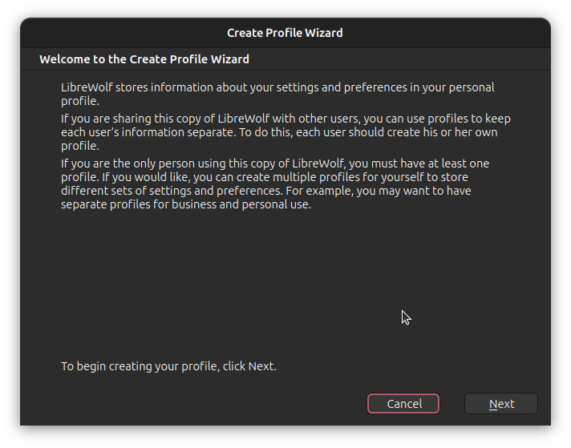Click to "Finish" and install the "FireSSB" extension to this new profile

Create SSB links with using same browser profile. SSB links that created from another profile, may not work.
Create a blank shortcut
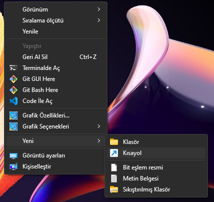Click to browse
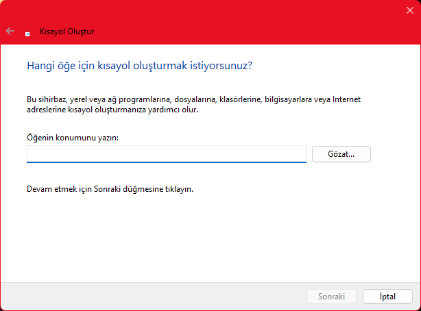And choose your browser from "Browse" window
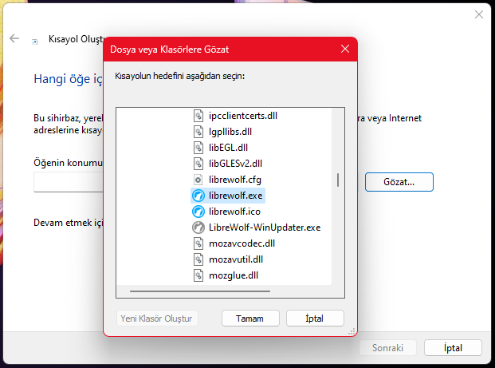Click to "OK" and click to end of inputbar that labelled by "Write item location" and write a space (one time) and quote (two times). And paste the SSB url between quotes. Later click "OK"
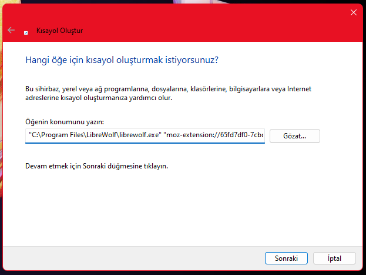Give a name for your app. And click to "End" button.
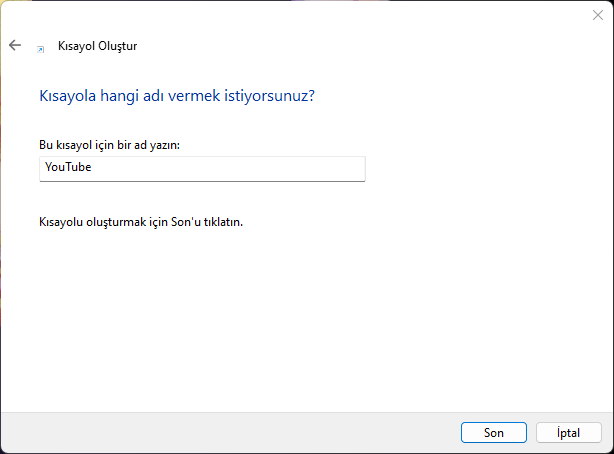Ready your shortcut!
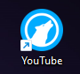You can run your application with opening launcher

Note: This guide will assume you have a icon file of the website.
Right click to the shortcut and click to "Properties".
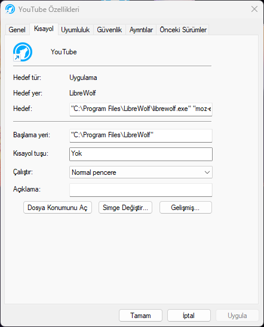Click to "Change Icon".

Click to "Browse" and choose icon
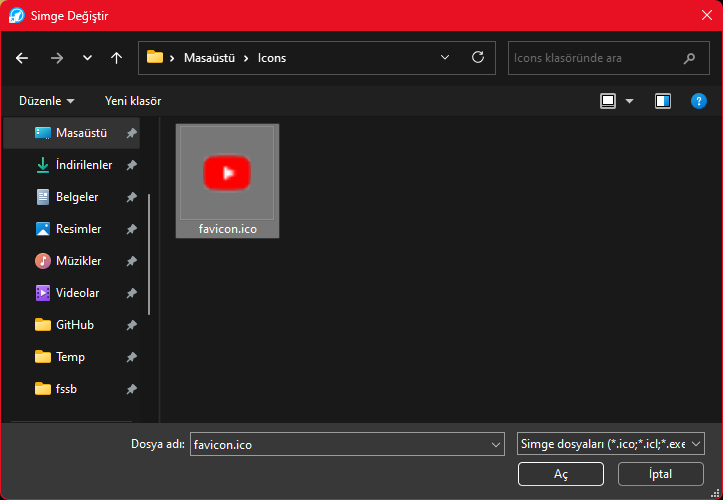Click to "OK"
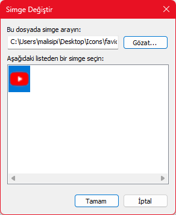Click to "Apply"
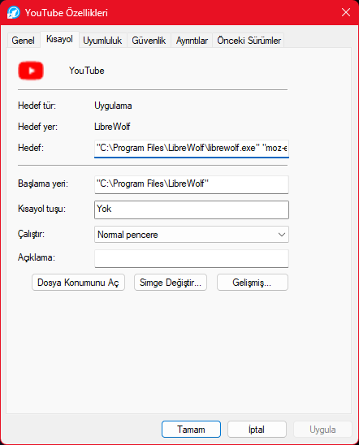And the icon is changed!
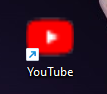On most linux distributions, a .desktop file can be used to create a launchable application. These are often stored in $HOME/.local/share/applications or equivalent path on your system. So create a new {NAME}.desktop file at the path and populate it with:
[Desktop Entry]
Encoding=UTF-8
Version=1.0
Type=Application
Terminal=false
Exec={browser} -new-window {profile} "{ssb-url}"
Name={name}
Icon={icon}
Replace the {} areas with their descriptions